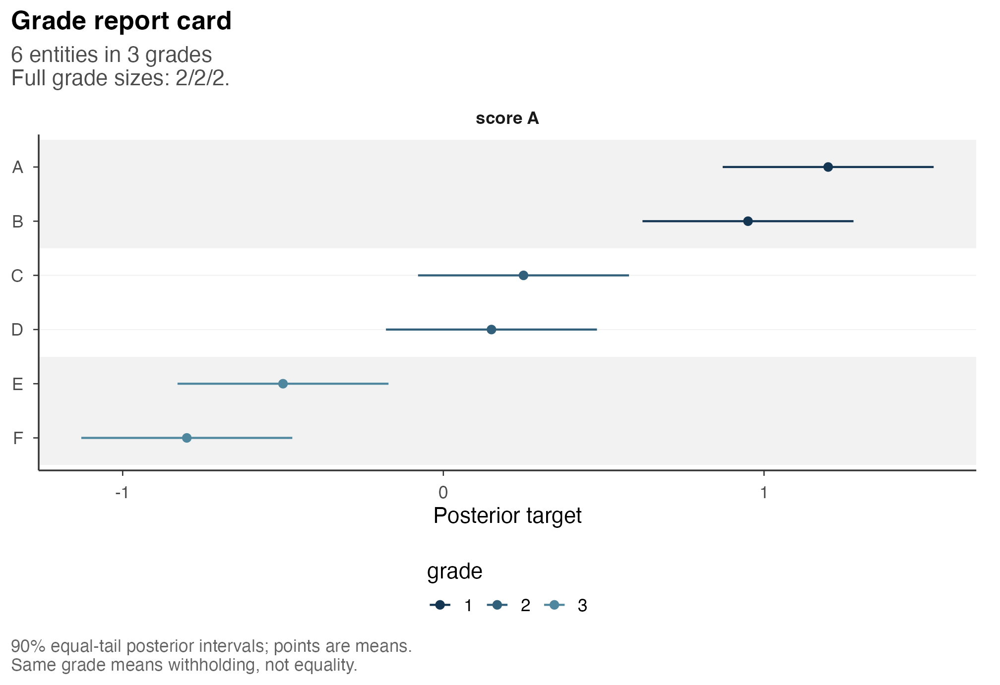
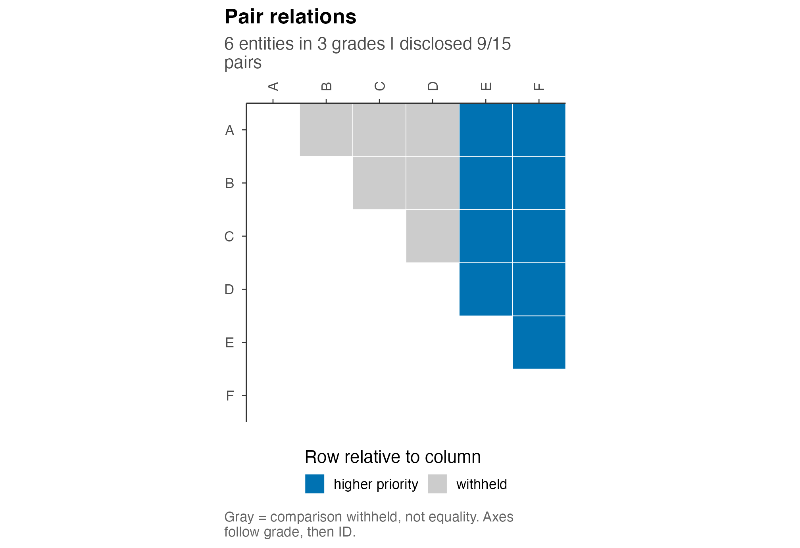
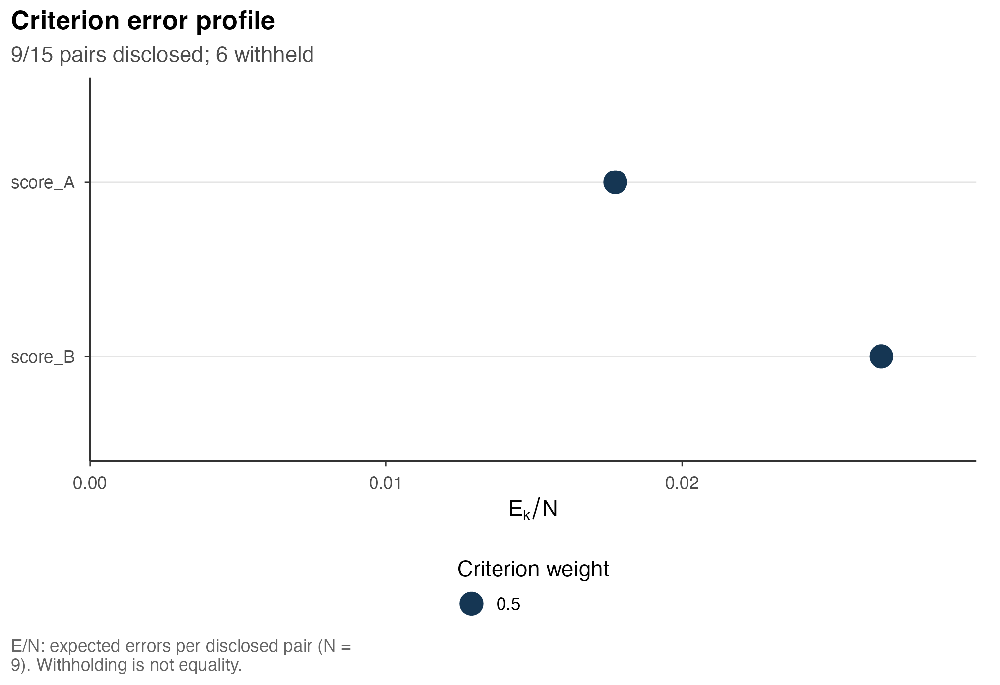
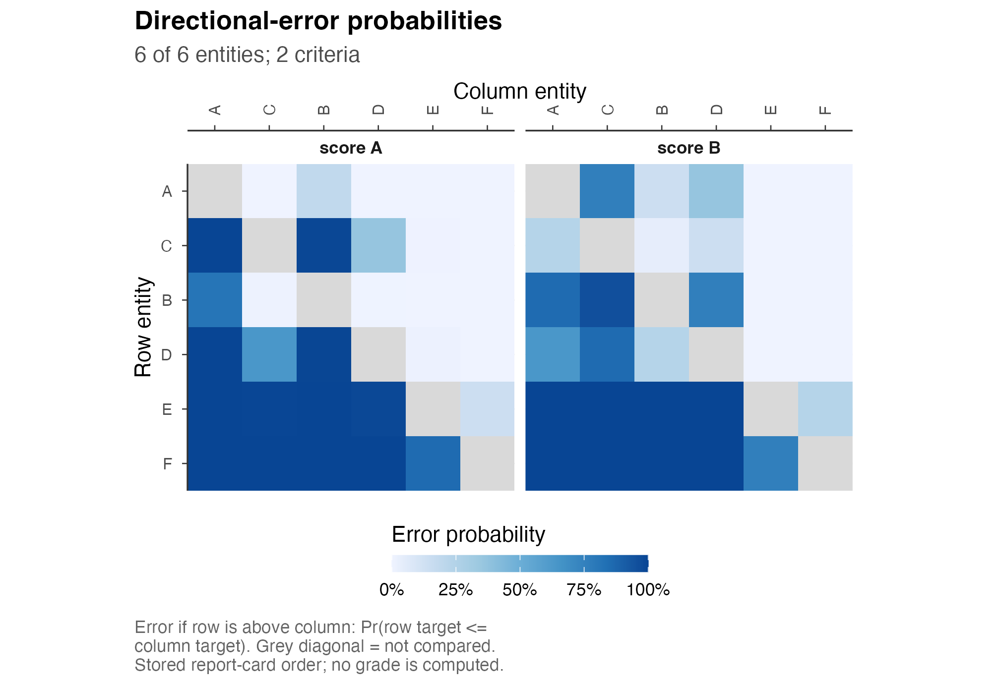
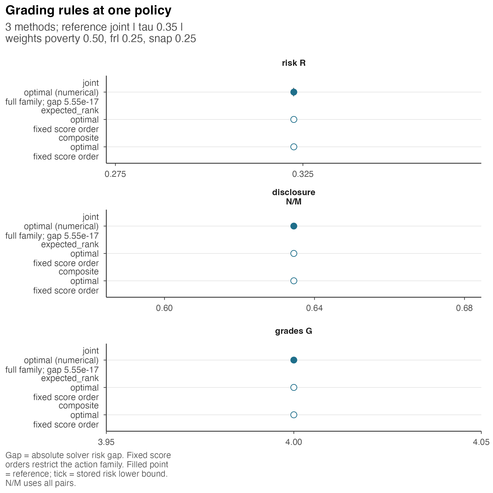
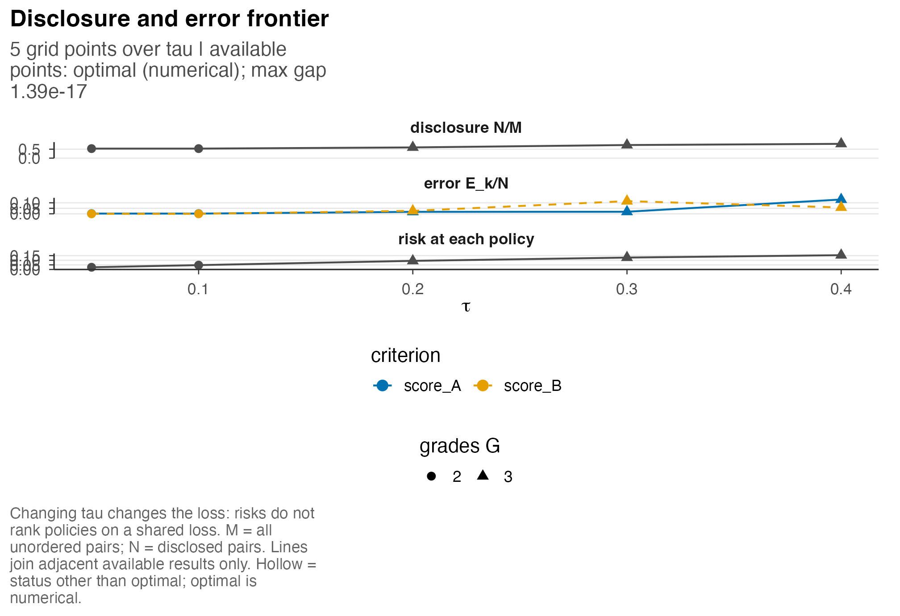
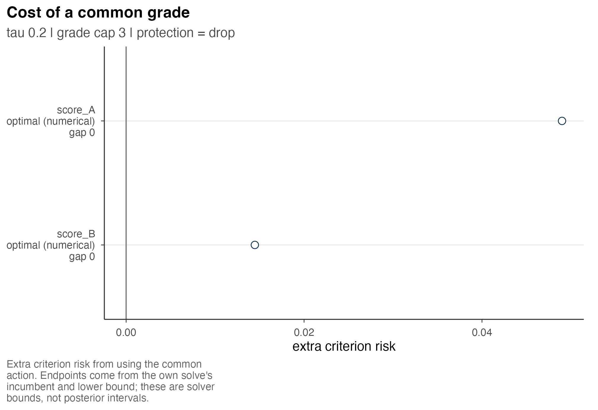

Seven graphical summaries describe the posterior information, grading
decision and associated losses. Each plotting function returns a
ggplot object based on prepared information, without
further optimization, posterior estimation or calculation of comparison
probabilities. The initial examples use the specified normal
distributions for six sites in Getting
started; a separate comparison below uses the additional 30-site
synthetic example.
The distribution of score A is unchanged when score B is included. Both scores have standard deviation 0.2, sites and criteria are independent, and higher values have higher priority. Grade 1 is highest. These sites have no empirical interpretation. A shared grade withholds a comparison; it does not assert that the true scores coincide.
1. Marginal posterior intervals and grades
The report card displays marginal posterior intervals alongside the selected grades. For one criterion, sites are represented on a common score axis. The intervals describe uncertainty about the targets; they do not represent probabilities of grade membership.

For several criteria, separate panels accommodate differences in
units. Display labels are separate from the stable entity identifiers.
The default row limit is 30; selection is spread across grades and
disclosed in the subtitle. Explicit entities can select a
larger report. Ordering by the posterior mean requires a single
displayed criterion or an explicit order_by naming the
criterion that defines the order.
2. Disclosed and withheld comparisons
The relations plot represents the grading decision, with colour indicating the disclosed direction or withholding of each comparison. The cells encode actions rather than posterior probabilities. In particular, a withheld comparison does not imply a posterior probability of one half.

Only order and equality of grade labels matter. Replacing occupied labels by other increasing integers preserves every relation. The same plot is available for a prepared fit or baseline, including an all-withheld action. When no validated incumbent is available, the display reports the computational status.
3. Criterion-specific errors and losses
Criterion profiles report posterior expected errors per disclosed
pair, expected errors per all pairs, or posterior loss. The default is
expected errors per disclosed pair; show = "E_over_M" and
show = "risk" select the other quantities. Equal loss
weights need not produce equal criterion-specific errors under the
common grading.

E/N is undefined when nothing is disclosed and remains
unavailable; E/M can then be zero. These quantities are
ratios of posterior expected counts and do not estimate classification
accuracy in an external sample. Budget lines appear only when
corresponding budgets were declared. Zero-weight criteria remain visible
with their weight identified.
4. Directional-error probabilities
The pairwise plot describes the input to the grading problem. Each cell contains the stored probability of an incorrect declaration placing the row entity above the column entity. These probabilities are calculated before optimization.
postrank_plot_pairwise(two, ncol = 2L)
Ordinary tie-free coefficients use the event
.
Self-comparisons, shown in grey, are NA rather than
zero-error comparisons. By default, the display selects at most 20
entities and reports the selection; all six sites are included here. The
function accepts prepared ordinary coefficients, including supported
probability inputs. Raw draws and the separate equality-neutral domain
are outside its input scope.
5. Comparison of grading rules
This example uses 30 synthetic sites on three criteria, with
weights = c(poverty = .5, frl = .25, snap = .25),
tau = .35 and at most four grades. The names are
illustrative and do not identify observed poverty or school eligibility
measures. The joint and fixed-order baseline actions are evaluated under
this one posterior and loss.
postrank_plot_compare(comparison, ncol = 1L)
The method labels include computational status, optimization scope
and gap. A fixed-order optimum applies to contiguous cuts of that score
order, rather than every grading. A supplied action outside the
reference constraints is marked accordingly; its risk can still be
scored but is not a minimum over the same feasible family. The relations
view, view = "relations", counts newly disclosed, newly
withheld and reversed comparisons against the reference.
6. Sensitivity to the withholding cost
For the six-site example with equal weights on the two scores, the prepared frontier varies tau through .05, .1, .2, .3 and .4. The inputs and the family of gradings with at most three grades are held fixed.
postrank_plot_frontier(frontier)
For exact optima in a fixed family, disclosure is nondecreasing in tau. For numerical solutions, interpretation also depends on the stored optimization gaps. A sparse grid describes only part of the frontier. Missing actions appear as breaks in the plotted path. Risks at different tau values use different losses. Preparing a new frontier calls an optimizer; displaying this stored one does not.
7. Criterion-specific costs of a common grading
The commonality view compares each criterion’s risk under the common report with its own best risk under the same tau and grade-count settings. Preparing this object solves an own-criterion problem for each criterion.
postrank_plot_commonality(commonality)
The interval is determined by numerical bounds for the own-criterion problem and does not quantify posterior uncertainty about the cost. Incomplete optimization may therefore yield a range of possible costs. When the common problem includes protection constraints, the own-criterion comparison family depends on whether these constraints are retained. Their treatment must therefore be reported with the result. The tutorial has no such budgets.
Underlying tables and figure export
The full underlying table is available through
postrank_plot_data(two, "profile") or another supported
component. Display row limits and labels do not change those tables.
ggplot2::ggsave() exports the returned plots; optional
svglite provides SVG output. See Figures and sensitivity analysis
for dimensions and explicit recomputation examples, and Reading and exporting
results for tables and reports. No public plotting functions are
provided for the additional reserved figures in this candidate.